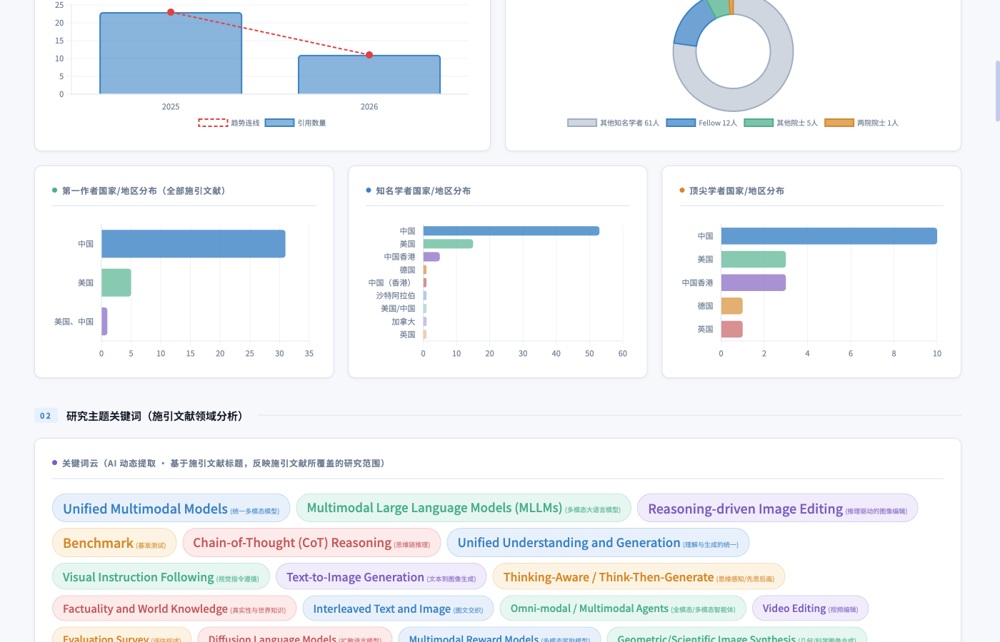

Paper Citation Portrait Analysis Agent
输入论文题目或从 Google Scholar 主页选择，一键自动爬取所有施引文献、识别著名学者背景，生成精美的可视化 HTML 画像报告。
从爬取到报告，全流程自动化
四步完成完整的被引画像分析
真实论文的完整被引画像报告截图
统计概览 · Statistical Overview

地区分布 · 关键词云 · Country Distribution & Keyword Cloud
需要 Python 3.10+（推荐 3.12）
扫码加入用户交流群，获取最新动态、交流使用心得，支持人工代查咨询。
扫码加入 · Scan to Join
如果本工具对您的研究有所帮助，欢迎引用